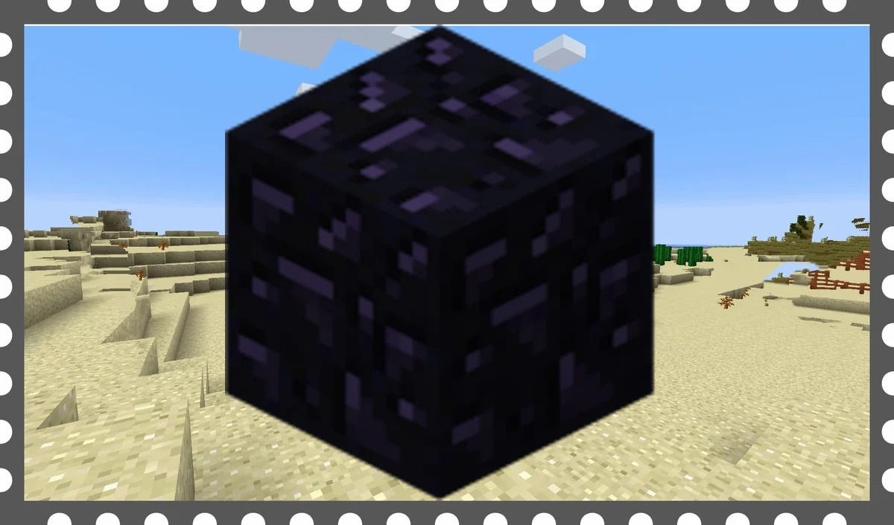
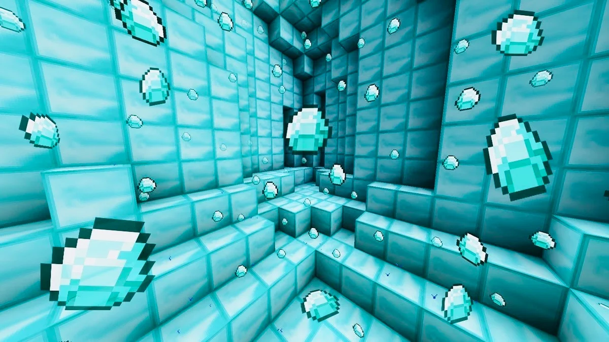
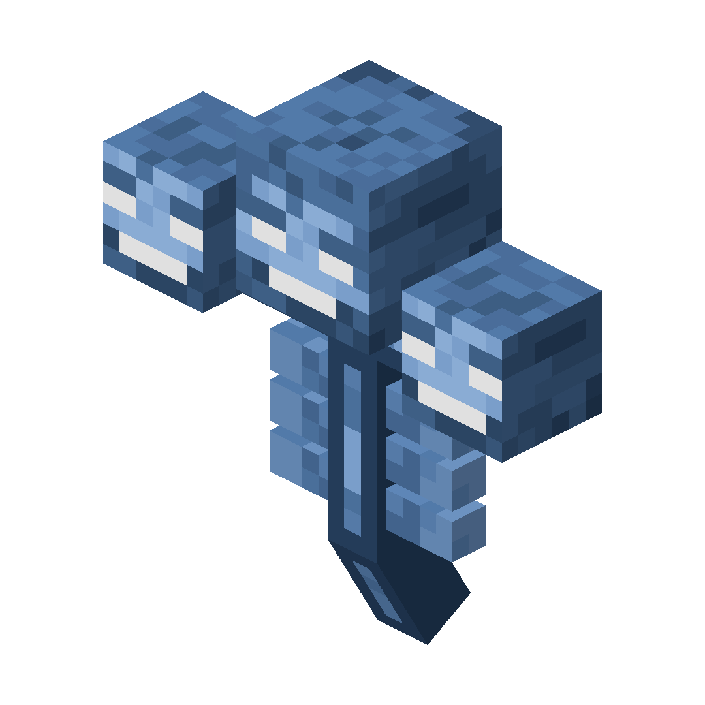

лучшие блоки майна
1 бедрок
Bedrock состоит из пяти самых нижних слоев Верхнего мира в грубой схеме, хотя верхние четыре слоя преимущественно плоские коренные породы с редкими промежутками, что делает самый низкий, полностью плоский пятый слой (при y = -64) в основном недоступным.
2 обсидиан
3 алмаз
лучшие блогеры в майне
1 аид
2 фиксай
3 тумка
лучшие мобы в майне
1 корова[потому что говяяяяяяяяяяяяядина]

2 эндер дракон

3 визер
лучшие зельки в майне

1 скорости
2 невидемости
3 силы
Назад